Réhabilitation du mur de clôture
Remise en état du mur existant (reprises et peinture blanche) pour sécuriser et valoriser le périmètre de la base.
Réhabilitation de la clôture, fabrication des massifs, peinture des conteneurs et construction d’un hangar : AEC a réalisé l’ensemble des travaux pour le compte de MLC.
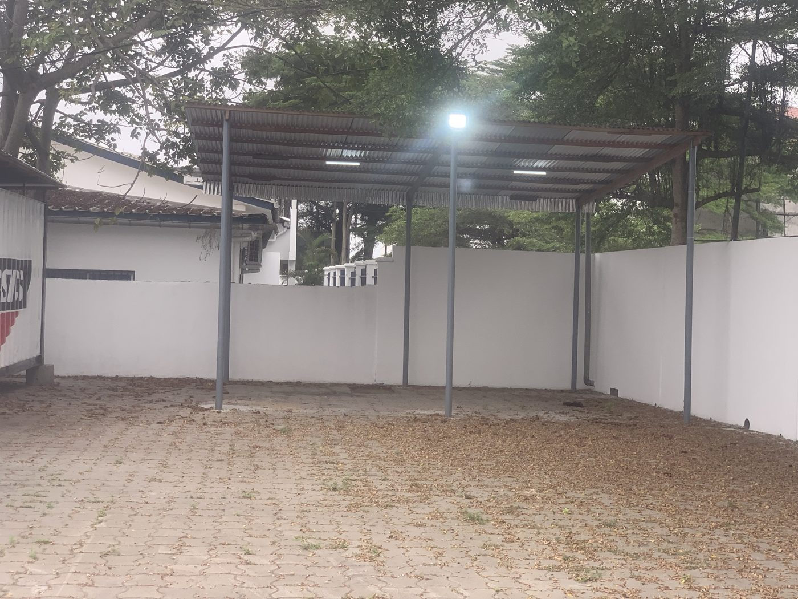
MLC a confié à AEC l’aménagement d’une base fret située à l’aéroport : mise en sécurité du site, installation des conteneurs de stockage et création d’un espace couvert.
Tous les travaux ont été réalisés par AEC, de la reprise du mur de clôture jusqu’à la construction du hangar. Les photos ci-dessous sont des photos réelles du chantier.
Remise en état du mur existant (reprises et peinture blanche) pour sécuriser et valoriser le périmètre de la base.
Pose de poteaux métalliques et de grillage pour délimiter l’espace, avec portail coulissant métallique.
Fabrication de massifs en béton pour poser les conteneurs de stockage à niveau, au-dessus du sol.
Remise en peinture des conteneurs et marquage des dépôts (A et B).
Structure métallique couverte et éclairée, pour abriter les activités de la base.
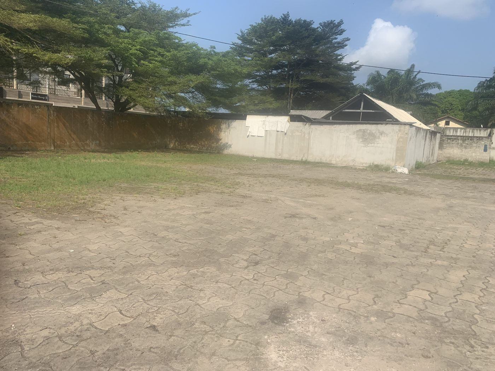
Photo réelle · Avant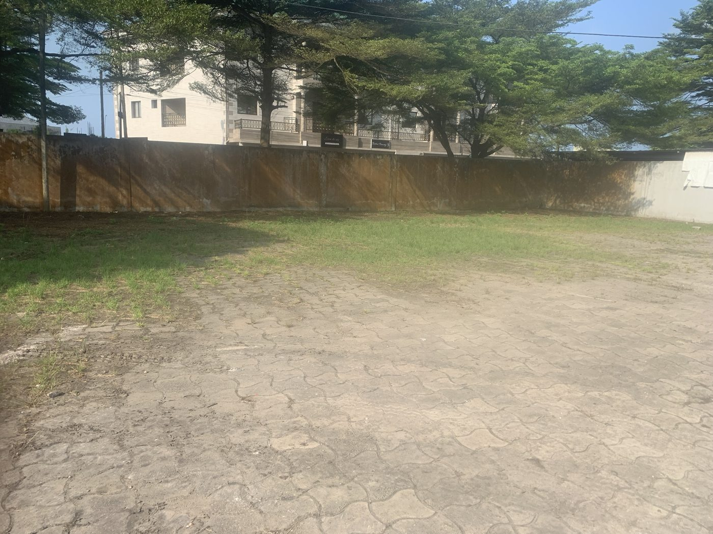
Photo réelle · Avant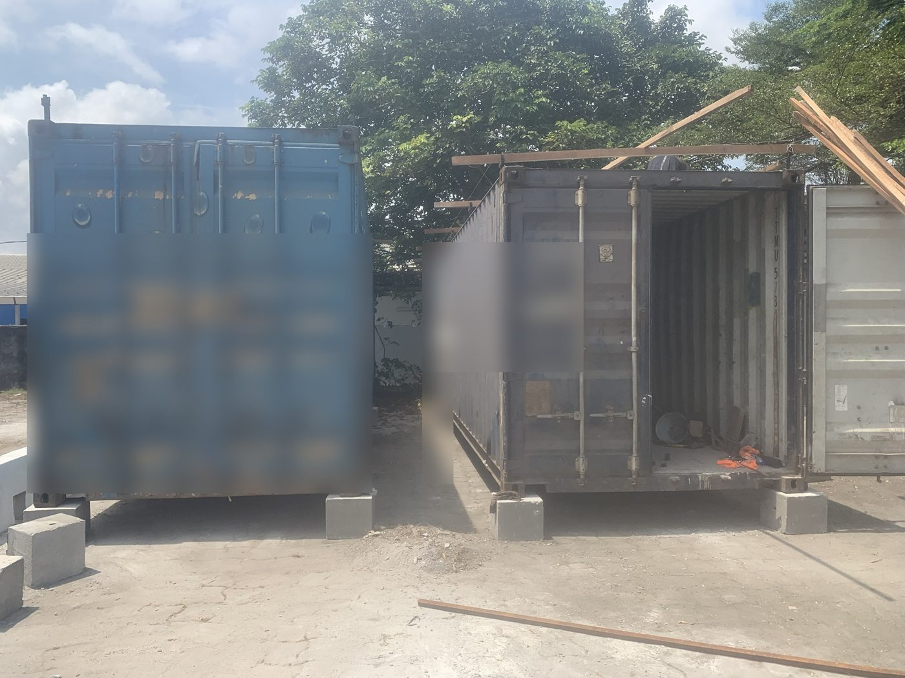
Photo réelle · Chantier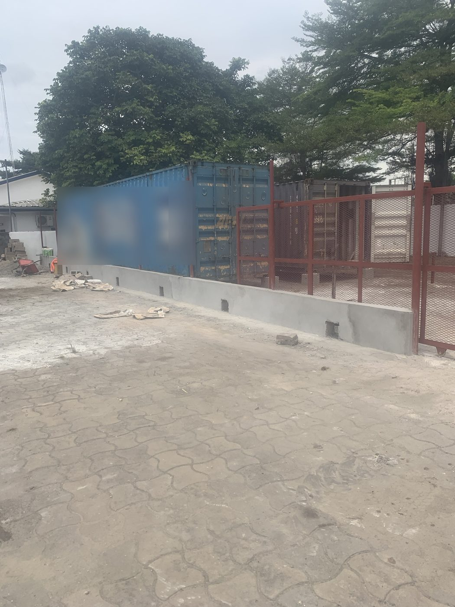
Photo réelle · Chantier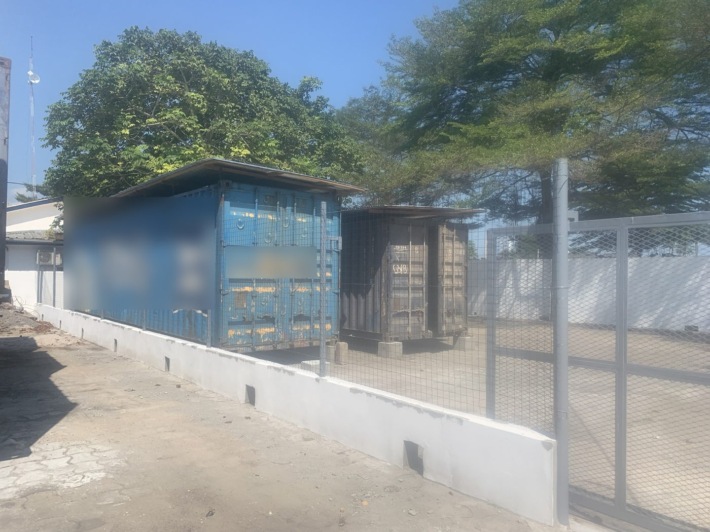
Photo réelle · Chantier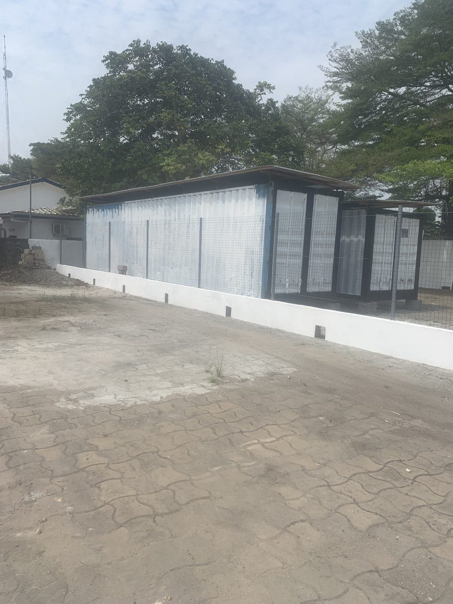
Photo réelle · Chantier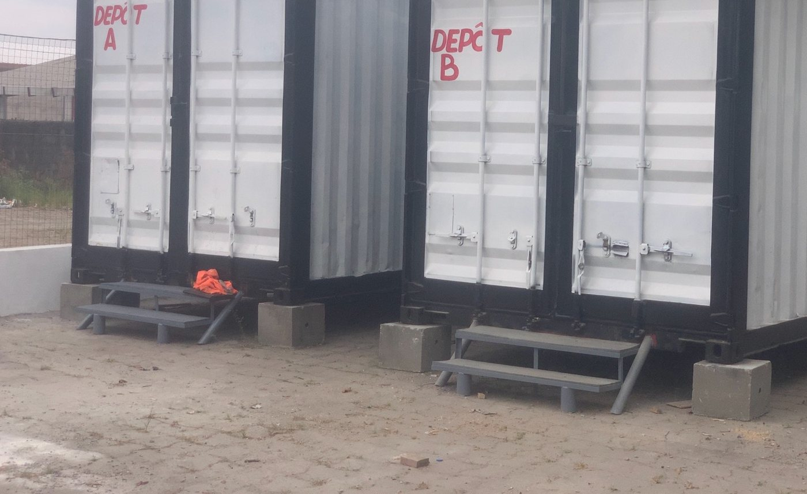
Photo réelle · Après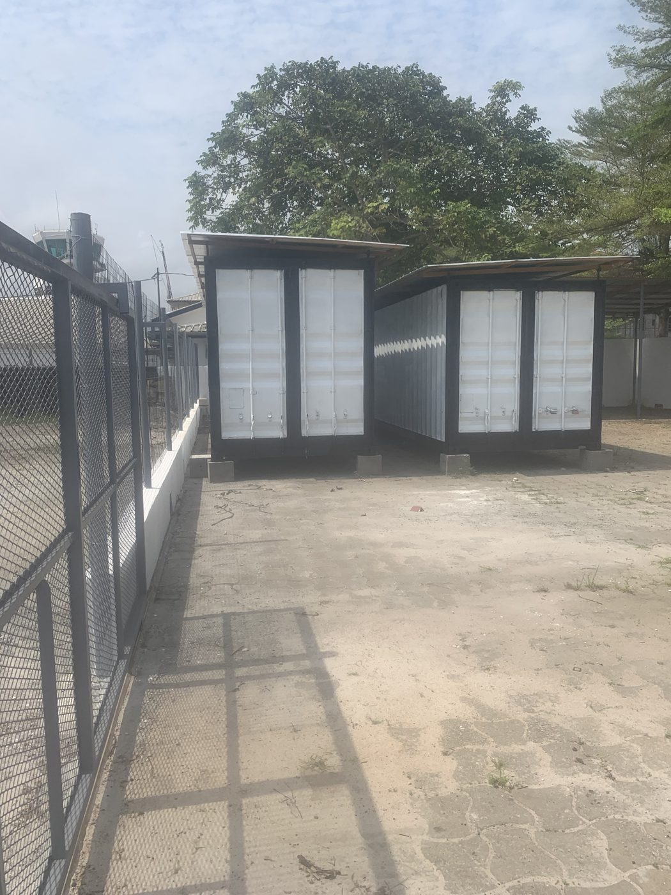
Photo réelle · Après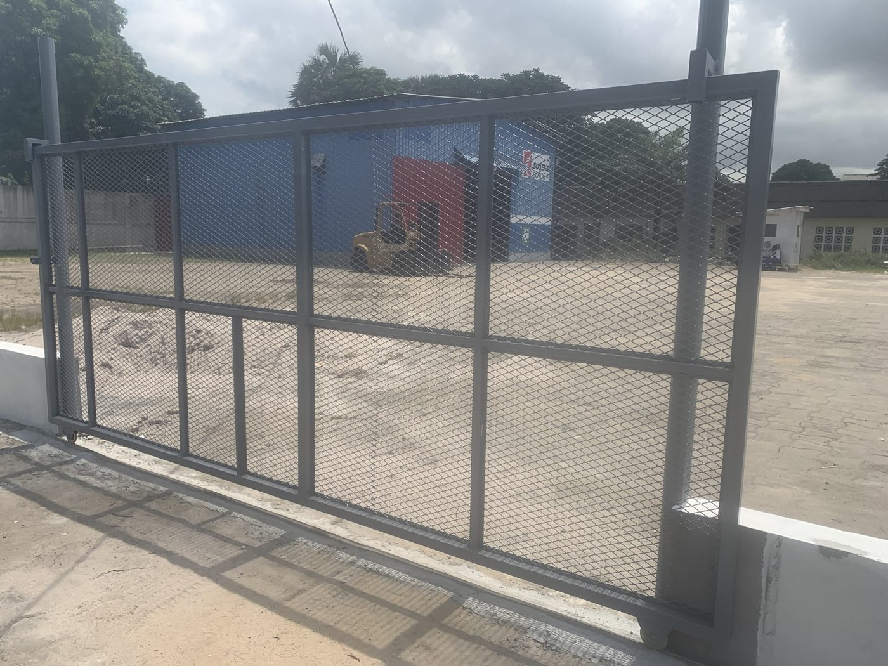
Photo réelle · Après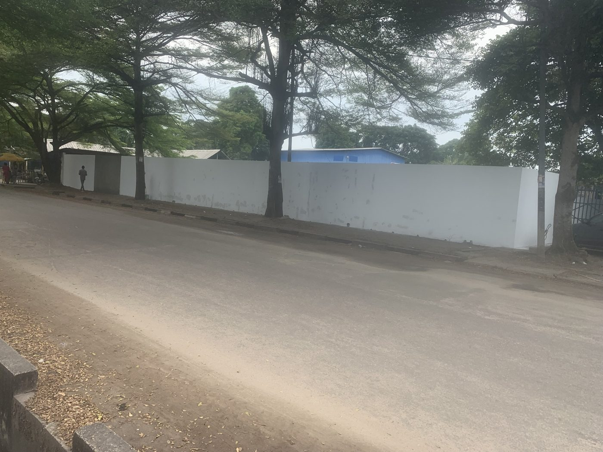
Photo réelle · Après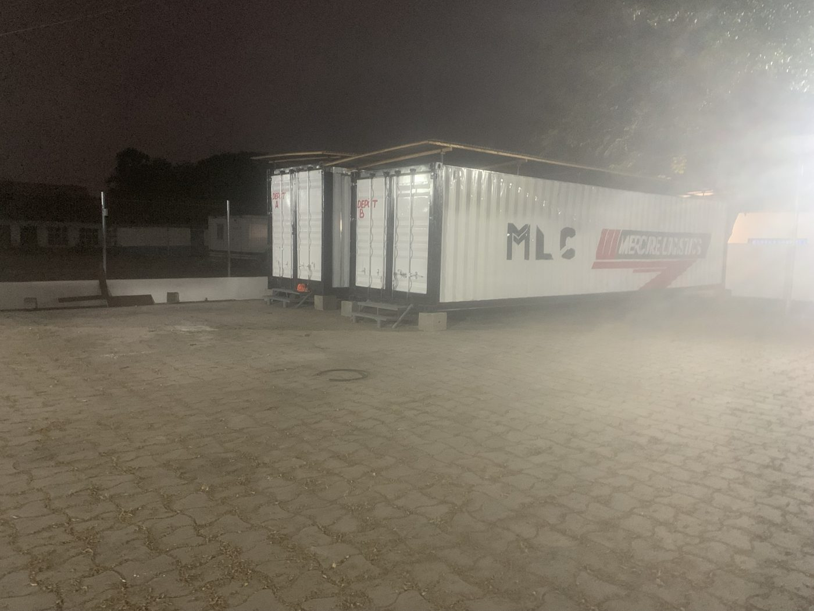
Photo réelle · Après